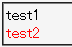

WinIE5.0が対応していないセレクタ（>, + など）の直後にidセレクタがある場合、idセレクタより前の部分は無視される。この結果、単一のidセレクタに対してスタイルを適用させる宣言として扱われる。
<style type="text/css">
#test1 > #test2 {
color: red;
}
</style>
<div id="test1">test1</div>
<div id="test2">test2</div>
「>」は子供要素であることをを指定するためのセレクタです。#test2は#test1の子要素ではないのでstyle要素内の指定は適用されないはずです。
WinIE6.0標準モード
WinIE5.01